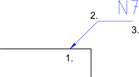

Führung
Werkzeugleiste / Symbol:


Menü: Bemassung > Führung
Schnelltasten: D, E | L, D
Kommandos: leader | dimlea | de | ld
Werkzeugleiste / Symbol:


Menü: Bemassung > Führung
Schnelltasten: D, E | L, D
Kommandos: leader | dimlea | de | ld
Führungen sind Hinweispfeile, die normalerweise einen Text mit einem anderen
Objekt verbinden. In der Abbildung weist der Text "N7" auf die Beschaffenheit
der Oberfläche hin.
